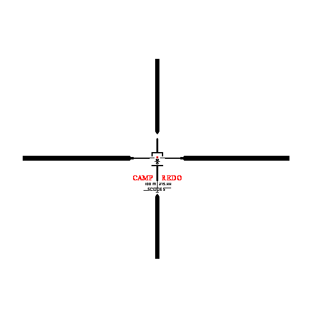

<!DOCTYPE html>
<html lang="en" manifest="el-pasillo-del-infierno.appcache">
<head>
	<meta charset="utf-8">
	<title>El Pasillo del Infierno</title>
	<script src="libs/three.js"></script>
	<script src="libs/physi.js"></script>
	<style>
	body{
		position: relative;
		text-align: center;
	}
	#main{
		position: absolute;
	}
	#MessageBox{
		position: absolute;
		text-align: center;
		margin-top: 40%;
		width: 100%;
		color: white;
		font-size: 20px;
		background-color: black;
	}
	#scope{
		position: relative;
		margin-top: auto;
		margin-bottom: auto;
		width: 50%;
		height: 50%;
	}
	</style>
</head>
<body>
	<article id="main"></article>
	<p id="MessageBox"></p>
	<script data-main="js/main" src="libs/require.js"></script>
	<!--  -->
	<script>
  (function(i,s,o,g,r,a,m){i['GoogleAnalyticsObject']=r;i[r]=i[r]||function(){
  (i[r].q=i[r].q||[]).push(arguments)},i[r].l=1*new Date();a=s.createElement(o),
  m=s.getElementsByTagName(o)[0];a.async=1;a.src=g;m.parentNode.insertBefore(a,m)
  })(window,document,'script','//www.google-analytics.com/analytics.js','ga');

  ga('create', 'UA-20035972-20', 'adrianarroyocalle.github.io');
  ga('send', 'pageview');
	</script>
</body>
</html>